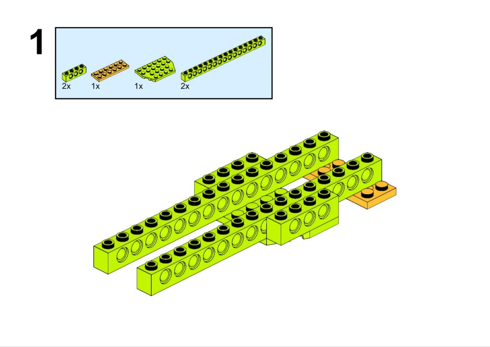
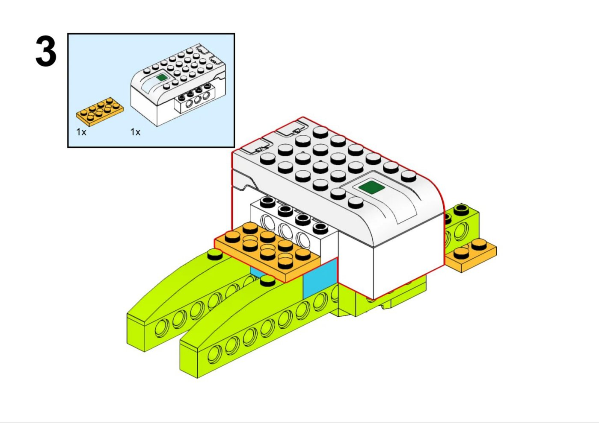
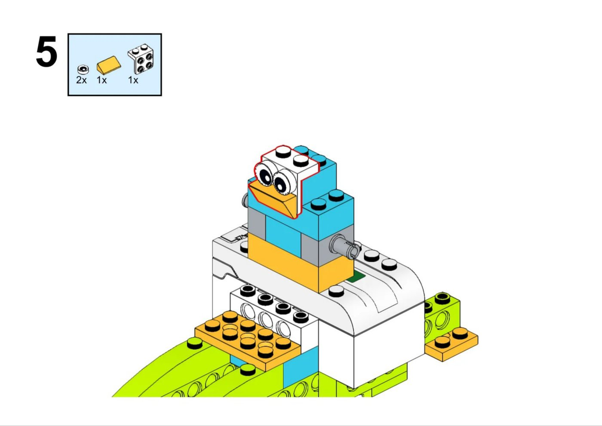
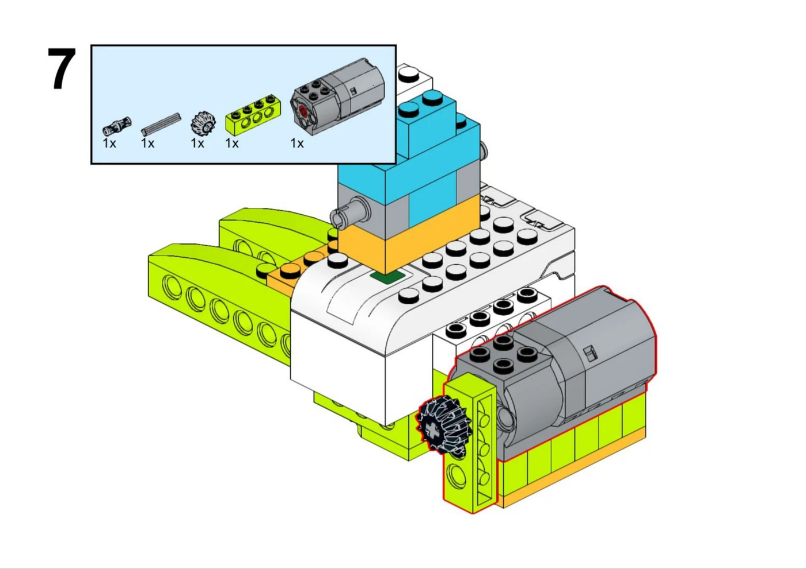
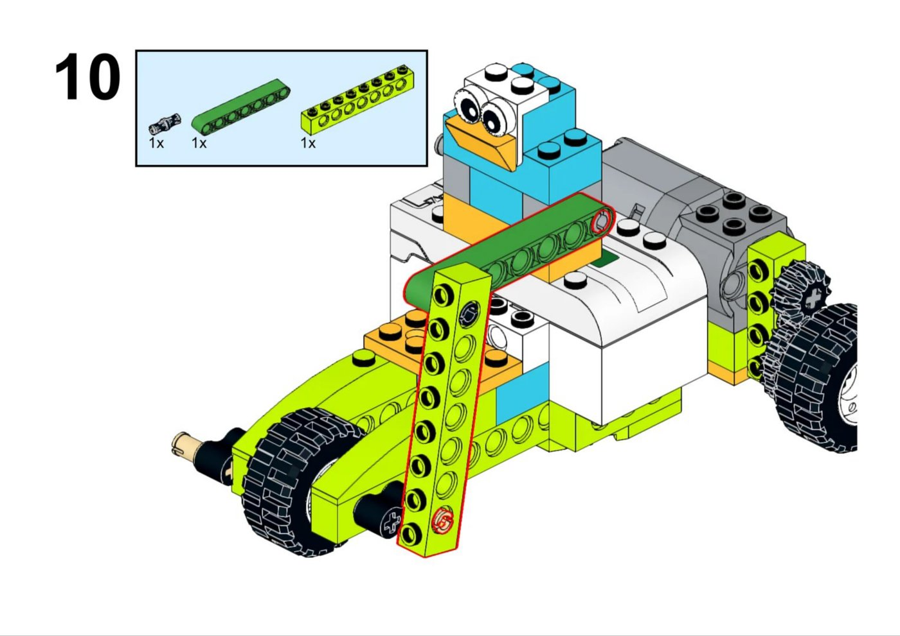

WEEDO 一级 · 第 3 课
三轮脚踏车
三个轮子为什么不会倒？
电机装在后面，车怎么往前走
今天
本课只做三件事
- 搭：12 步，把车和驾驶员装起来
- 看懂：电机的转，怎么拐个弯传给后轮
- 开起来：写程序让车跑、让车停
复习 · 前两课
三个问题
Q1十字轴插进电机孔里，电机一转，轴会怎样？
跟着一起转。轴把电机的力气传出去。
Q2两个齿轮咬在一起，一个转，另一个呢？
跟着转，但方向相反。
Q3梁上的孔，除了插轴还能干嘛？
用黑销把梁和别的零件连起来，拼成车架。
导入
自行车两个轮，停着会倒。
三轮车为什么不倒？
先看地上——三个轮子着地的位置，连起来是什么形状。
提示：在纸上点三个点，能不能连成一个稳稳的面？
三个轮子着地是三个点，三个点确定一个面，
车身的重心落在这个三角形里，就不会倒。
认识 · 整车分三块
先认人，再动手
前轮（1个）在前面，只管方向和支撑
后轮（2个）电机在后面，带着后轮转
车把 + 驾驶员两根扶手架在前面，小鸟坐中间
搭建 单元1 · 第 1-2 步

先拼车架
- 两根最长的带孔梁，平行摆好——这是车的两条边
- 橘色小板在中间把两根梁拉住，橘色长条垫后面
- 两块弧形件装在最前面，是前轮的「挡泥板」
❌ 两根梁不平行，一前一后错开 → 后面轮子装不上，现在就得对齐。
搭建 单元2 · 第 3 步

装上智能集线器
- 白色大块就是集线器：电池、开关、大脑都在里面
- 底下先垫一块橘色板，再把它压装到车架上
- 按一下侧面，绿灯亮 = 有电、可以连
搭建 单元3 · 第 4-6 步

驾驶员上车
- 蓝白积木一层层往上叠，是小鸟的身体
- 白色 2×2 砖贴两只眼睛，橘色斜砖是嘴
- 两侧灰色短轴先插好——等会儿车把要架在这上面
第6步的四块小黄砖，先在车后拼一条备用，下一步要用。
搭建 单元4 · 第 7-9 步（最难）

电机 · 齿轮 · 轮子
- 灰色电机装在车尾，轴上插冠状齿轮（边上带尖齿的黑轮）
- 后轴穿过车架，轴上小齿轮和冠状齿轮咬在一起
- 两个大后轮压装到后轴；前轮装到前叉中间
两个齿轮中间不能留缝，也不能顶死——用手转一下后轮，顺不顺？
原理 · 本课核心
力气在这里拐了个弯
- 电机的轴朝下，轮子的轴朝横——两根轴互相垂直
- 冠状齿轮的齿长在边上，正好把转动拐 90° 传出去
- 这叫「改变传动方向」：电机转 → 后轮转
后轮带着整车走，叫后轮驱动；前轮只负责撑住和转向。
搭建 单元5 · 第 10-12 步

架起车把
- 两根绿色长梁，一头连小鸟旁边的灰轴，一头连前面的竖梁
- 两根竖梁用黑销固定，底部正好夹住前轮两边
- 装完用手推车走一圈：三块着地、不歪不倒 = 合格
编程
让车自己跑起来
开始：
电机 这个方向 · 功率 8
等待 3 秒
电机 停止
功率别拉满：8 挡最稳，车太快冲出桌子，你来不及抓。
调试
电机在响，车不走。
先自己找两分钟，按顺序查：
- 两个齿轮到底咬上没有，有没有漏装、错位
- 后轴上的轮子，是不是压到位了
- 手转后轮，是顺滑还是卡住
- 程序里电机方向，是不是选反了
挑战
再进一步
- 两辆三轮车比赛：谁走得直、谁先到终点
- 改功率和等待秒数，让车正好开到线就停
- 想想：如果想让车碰到人自己停，还要加一个什么零件？
提示：一个会「看距离」的传感器——运动传感器。
收尾
三个问题
Q1三轮车为什么停着也不倒？
三个轮子着地是三个点，确定一个稳当的面。
Q2冠状齿轮在这里起什么作用？
把电机的转动拐 90°，传给横着的后轮轴。
Q3电机响但车不走，先查哪里？
先查两个齿轮有没有咬上，再查后轴和轮子。
把手机横过来看，更清楚
点一下继续
空格 揭晓